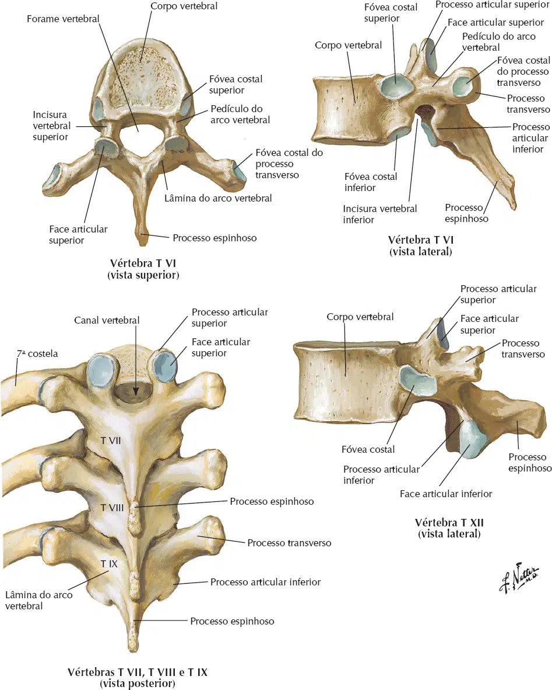

Composta por 12 vértebras (T1 até T12), forma junto com as costelas a parede posterior de todo o tórax.
São características das vértebras torácicas:
Fóveas costais no corpo e no processo transverso;
Processos articulares orientados ântero-posteriormente.
